Editor
Approved application · approved logoEvery image below is an actual canonical PNG. Open an image for its full resolution. These are authored design scenes, not current-app browser captures.
Content · table
block-tableActions and implementation pointers
+ New page · Journal · Explore · All pages · ⌄ · Reflections · › · Reading · Ask Journl · Today’s Journal · Close · Instant · Thinking
apps/web/src/components/editor/document-toolbar.tsxpackages/better-editor/src/engine/suggestions.tspackages/better-editor/src/ui/context-menu.tsx

SHA256 0a860901d228ee7b9af3fe97fadccc8c75992808d469e06ea236395a2635dd5a

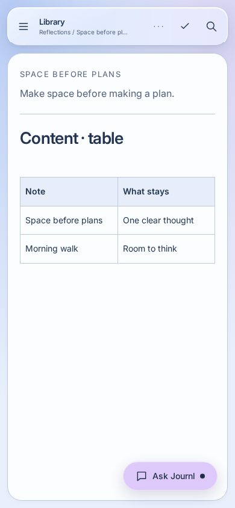
SHA256 9765c30b50c1cff2bc19654586278e2749a73d1aae0b98a384b7d87d57caf176

SHA256 0a9d144bea1a5a0e6fc37a662d6da145dba5c47d40ad65c8d5b26686b8eb9de5

SHA256 6e0434f841a22e7470315aab005696aee4b9b24ae295b6f1ebaca53286b49b5c
Toolbar command inventory · supplementary
toolbarActions and implementation pointers
+ New page · Journal · Explore · All pages · ⌄ · Reflections · › · Reading · Copy block link · Insert link/reference · Block type · Display as · Bold · Italic · Underline · Strikethrough · Inline code · Ask Journl · Today’s Journal · Close · Instant · Thinking
apps/web/src/components/editor/document-toolbar.tsxpackages/better-editor/src/engine/suggestions.tspackages/better-editor/src/ui/context-menu.tsx

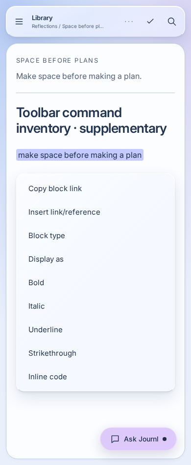
SHA256 6b33696cb06fa2f6afd8e71e367bb56db5202a0e39c51d72beb3069234e1e08b

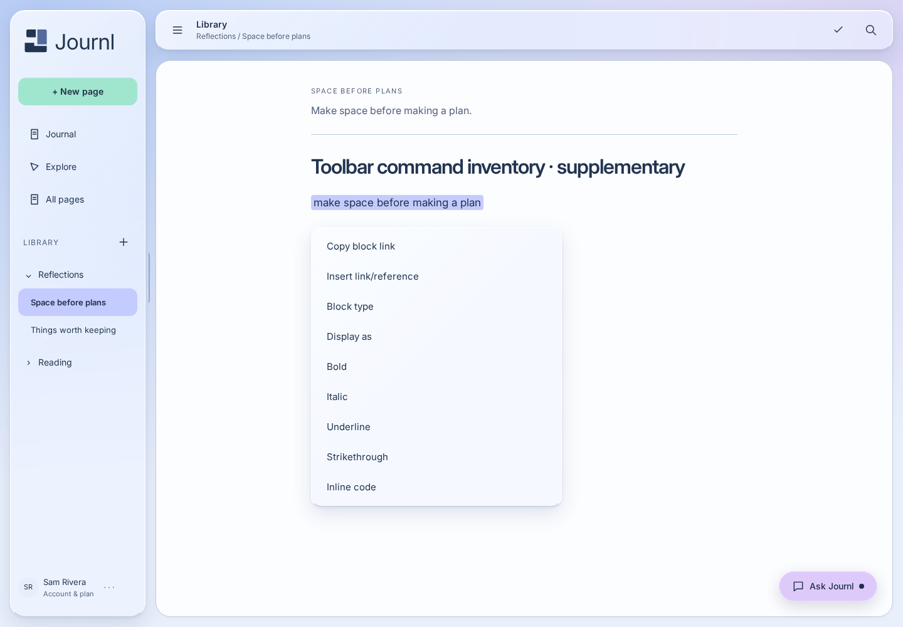
SHA256 f23539c91111295411288889ef4fa153b956dff44224d0003ea53394f717465f

SHA256 c3183d10853806bac169cf4d6aaa2170aba8399f2c569886d2b9a5c388a87604

SHA256 f06f87b0a1caefcb7c6650cf99fe49d0533b9086e2b967315e6aba507f1fb655
Formatting and history
toolbar-moreActions and implementation pointers
× · Align text · Text color · Highlight · Indent · Outdent · More block actions · Undo · Redo
apps/web/src/components/editor/document-toolbar.tsxpackages/better-editor/src/engine/suggestions.tspackages/better-editor/src/ui/context-menu.tsx

SHA256 33b82c9be357a1dcfb2d161ac267b84520138f0b9573fcca878a8357e86863c3

SHA256 02b1981b8d5d596975d13fa47b5a0d7cdc16cd5804ab29bf2fc798f0706130b2

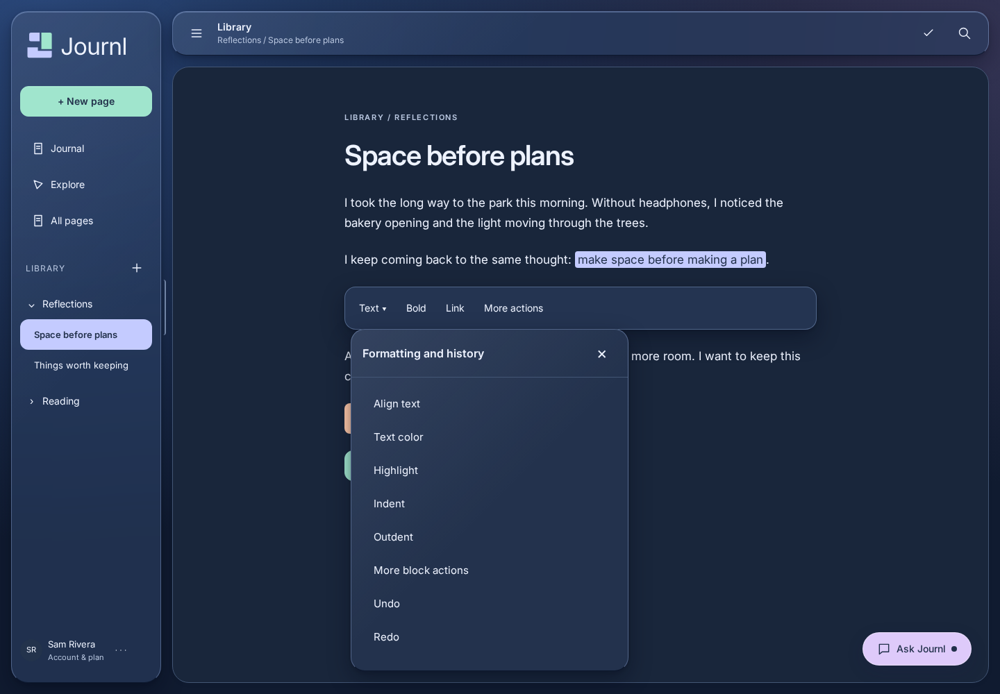
SHA256 8ebfc84f457e32b460a67411a92b112a8190535423e93b42e013cdb2f0d56de9

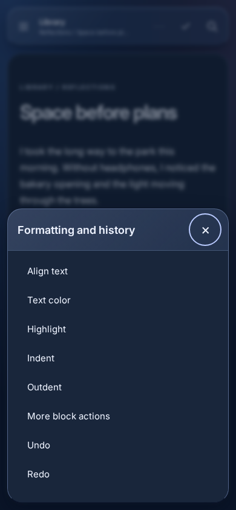
SHA256 26027606f03a52186f3caf16b7b78d553a785b3602ba7ca200a5e3415d2fd008
Text marks
marksActions and implementation pointers
+ New page · Journal · Explore · All pages · ⌄ · Reflections · › · Reading · Bold active · Italic · Clear mark · Ask Journl · Today’s Journal · Close · Instant · Thinking
apps/web/src/components/editor/document-toolbar.tsxpackages/better-editor/src/engine/suggestions.tspackages/better-editor/src/ui/context-menu.tsx

SHA256 168fbe67f425e2ff342547e45d3763558300928db4dee906990f13f809dc071e

SHA256 c058087b4b7570effbcb48ca3c93364d18d526f875d98e6a33525ac7307cf4d4

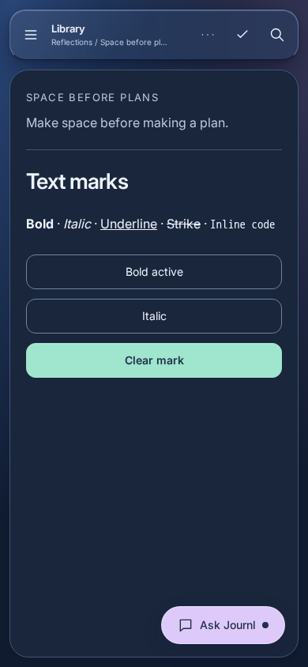
SHA256 4ec223c89522673785f3bc859e747c99e82baf7587f7caefdbb5638ee666b3ae

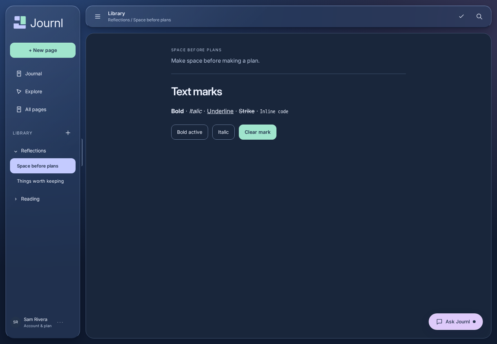
SHA256 54422abff375e0efd7984984b773e9e89c78f324b7b0baaad9aa2fac93fdf3de
Align text
alignmentActions and implementation pointers
× · Left — selected · Center · Right · Justify
apps/web/src/components/editor/document-toolbar.tsxpackages/better-editor/src/engine/suggestions.tspackages/better-editor/src/ui/context-menu.tsx

SHA256 2c1860fc6ecfcef837ca6eab67aab28a668dad9764aee3014d443689a2a9c737

SHA256 42a4918e5938c7f3c87b4f6fea3d13f07e01b83b8da5da9cc989ef702729ec18

SHA256 aa648204be0ac114008258916ce94d61ee51ecd3a9f77c73917158f95550c0ec

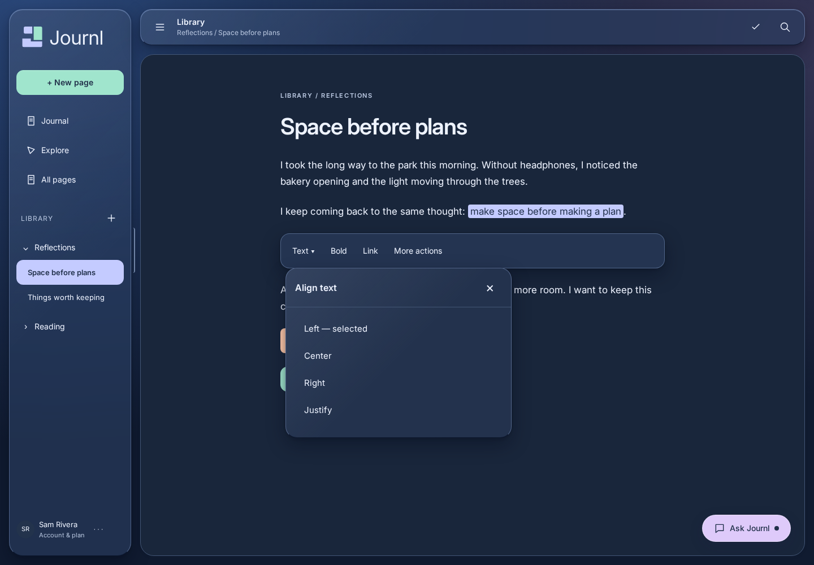
SHA256 3713407572ed60767e18ba2e63464542aa7fc70fabe716799438dc6680bade7f
Text color
colors-text-colorActions and implementation pointers
× · Default · Gray · Brown · Red · Orange · Yellow · Green · Blue · Purple · Pink
apps/web/src/components/editor/document-toolbar.tsxpackages/better-editor/src/engine/suggestions.tspackages/better-editor/src/ui/context-menu.tsx

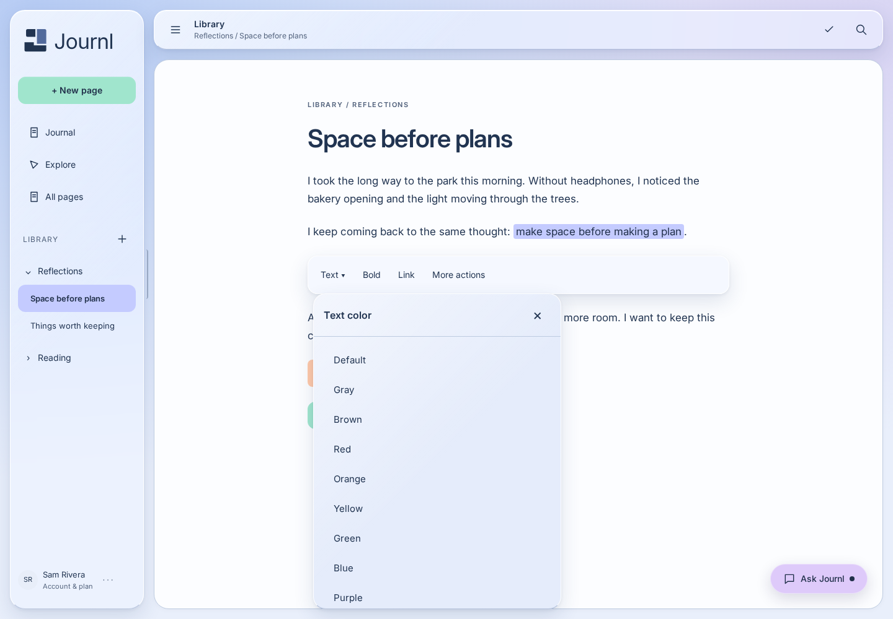
SHA256 b2fd368100d56c74c45484844d927d46e59132c203741b32be649828005344aa

SHA256 d6a6c045e3602a472114165220e6d4b626ca8519943f26f9c850956fec11c9c0

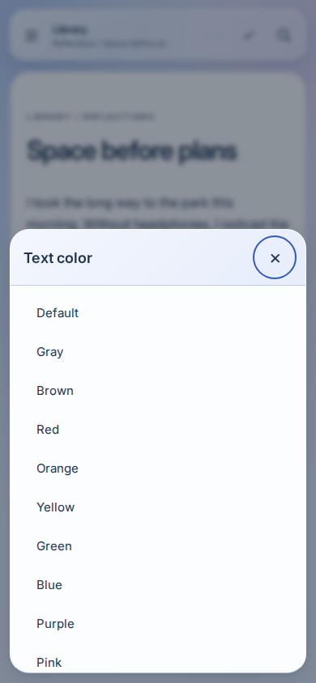
SHA256 4e5f461ea1f01859b68fc185aea84f59a0b8aba412d493abb337b56c99e2a504

SHA256 e94d7802fba24dcf57dab1e7acc9c1bc6c22162cd3ffc6ae3291102a6fed6332

SHA256 bbccacbd1d83db443bdc18689437574df10de27d09dda671cb5c8ca4307783d3

SHA256 24f2d0218f744bbe467f6de71d210a31648ea8e73ebd3842e9e2f35190611321

SHA256 f36c66c9db0a16ccca0f7ad31cc81310084751e218bd0ee477eb76e87bf5335c

SHA256 df8b3223bab29bef09625b2f7c695b4f6efd63ba895ccc60fbeca052fb1568db
Highlight
colors-highlightActions and implementation pointers
× · Default · Gray · Brown · Red · Orange · Yellow · Green · Blue · Purple · Pink
apps/web/src/components/editor/document-toolbar.tsxpackages/better-editor/src/engine/suggestions.tspackages/better-editor/src/ui/context-menu.tsx

SHA256 e12e3752e43b5a8016c7144a927a671056cb398092005ad574a9f5bb3dc88438

SHA256 e32a6d20cffd76e3be2fb9bd326a939034d1e6b8d2bc8bb97c9ca9192868fc84

SHA256 9a420f4f741f122a7892c975e152b247c845e83fb73ecc7a1c407786be2f4082

SHA256 383a827cd9375e0ff387f15b2af7d0d8ade0483aa7c8066c000174ef315cd987

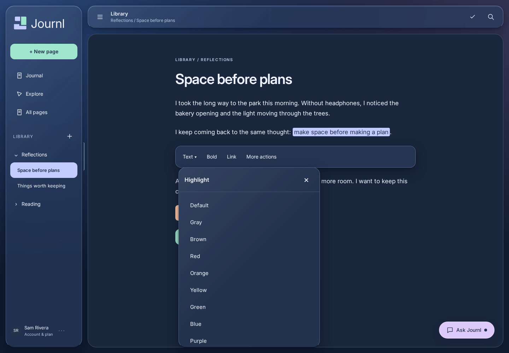
SHA256 190b7784aba6b8f1d386b676fefae55a041f8e521c0ab0295886031a1de3a955

SHA256 15a24886b91859e18ec441351aae07967da9d0c23a411ac0e00b5ef2aac4963e

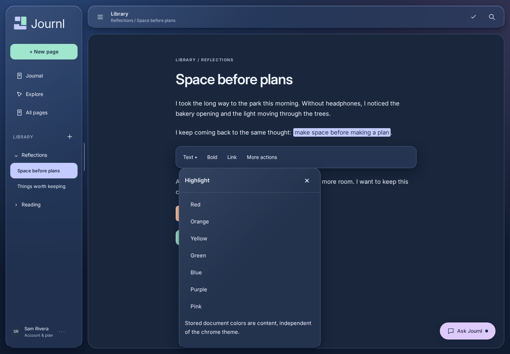
SHA256 a1dacf96b1509aeb822279210203ff4d1a7456b80ec854f31ae6ba64f35cdb7e

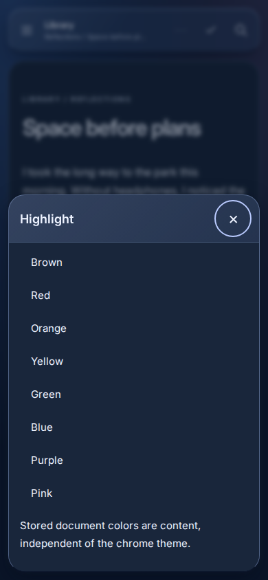
SHA256 524a4d5feac5f1f2d91cbc6eadb708877361382cb9c4e5d41e4f0d5e68fbed65
Slash menu · open
slash-openActions and implementation pointers
× · Text · Heading 1 · Heading 2 · Heading 3 · Heading 4 · Heading 5 · Heading 6 · Bullet list · Numbered list · Checklist · Toggle list · Toggle heading · Quote · Code · Divider · Table · Reference note · Reference block · Embed note · Embed block
apps/web/src/components/editor/document-toolbar.tsxpackages/better-editor/src/engine/suggestions.tspackages/better-editor/src/ui/context-menu.tsx

SHA256 2031b15acb32c1d30da821be167cc5f10bdff82db6a795c8b77970177fcb18aa

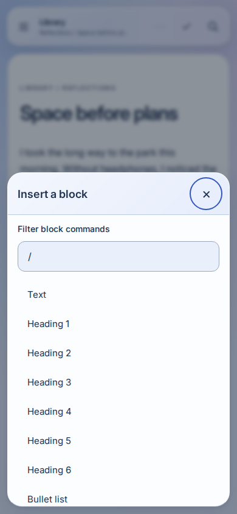
SHA256 2ce5d316adc1d42e86ea16b73d18e0aac51820b7cdffb01bb4acd9d36fb6d7c0

SHA256 a274f807264e01e5b05c2a7d7a8e1f77a3a27eefc1a659e0954651a7353bfd65

SHA256 4a260744e2ced4bdbe098b62cc94cf8e49a5fe7d72ca1f114f0b3c990f51bcab

SHA256 64779802ee61a08a932ffd0487c17b70f86d49d746bab92fd1efd3ae8a5d1790

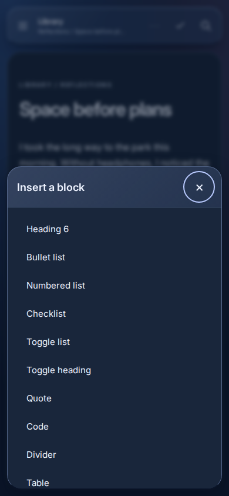
SHA256 40ea1a11aa5c9c0f9faf17403593445ddcadc7ffeb55e648ab45f2e9d58ad68a

SHA256 b8ee59d11f4ef6f1d7d228e2f2b90d4638f00789258619c1494b1e2322893d1e

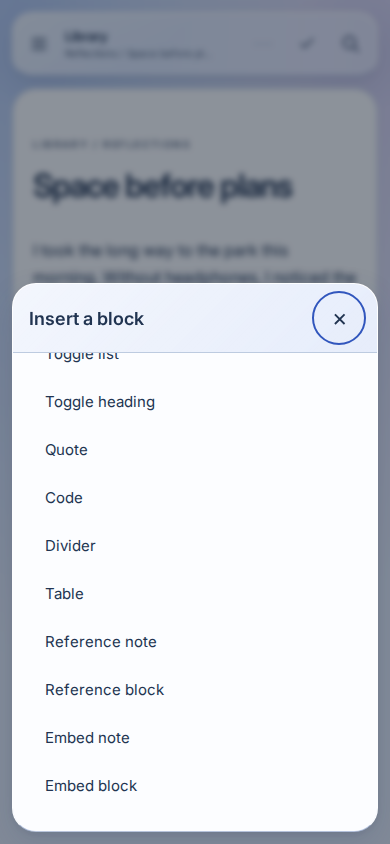
SHA256 e1003d6fe93137f72c5507de7d10668906058fcf8f625e95a8248f2686ec270e

SHA256 0cf1a2e3b42608a59e97429f83f980ae17eba33ab52c9f695640a9ae3b11a36b

SHA256 36baa4d407f4c204e848735ff827f6bdfaaad044b954c90b797a65fabd4cc221

SHA256 67dac31e7f1ed80a82acce896f919c476c25899c268d47e3973e294193b5984f

SHA256 7f2ee78ae72e16204ea2c7d44cc615099528933c749a743624da0d29b83d3e80
Slash menu · filter
slash-filterActions and implementation pointers
× · Heading 1 · Heading 2 · Heading 3
apps/web/src/components/editor/document-toolbar.tsxpackages/better-editor/src/engine/suggestions.tspackages/better-editor/src/ui/context-menu.tsx

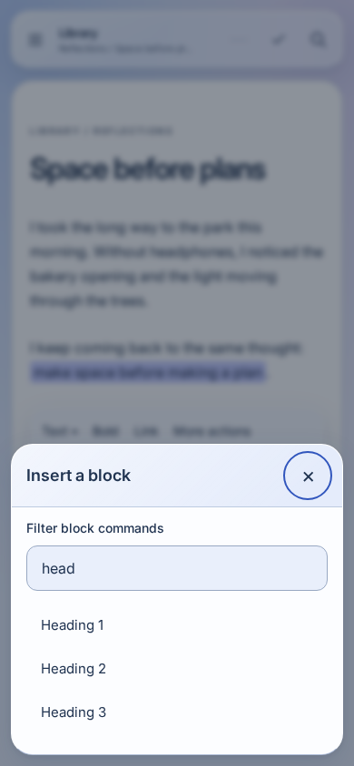
SHA256 7d56409fef6730a34ce3639634afd924d40455361679f88ee086acdcfa9f936d

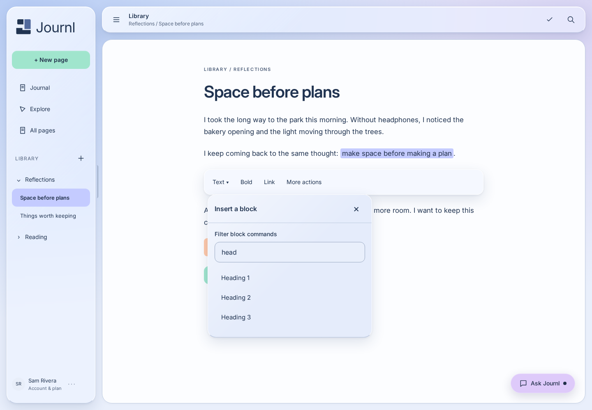
SHA256 41b48d444af3d21d4144ff8ed902f114a79cf81e06d0ebe95b92a71f1683fa10

SHA256 ebcf1ab93a1af6bbf37c8cbf46296d9c98abb8bf5de742562b34e5a90eaf6016

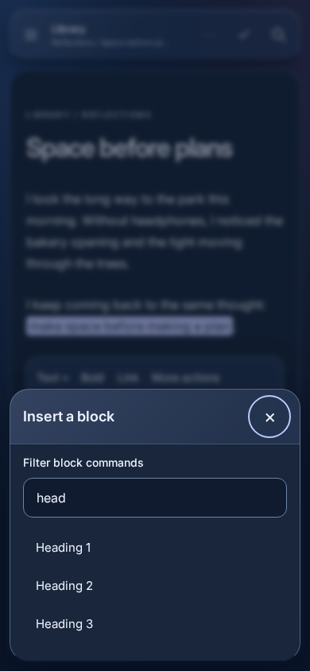
SHA256 6b4894317f300aef993951b73d79b859e86076d67314731e5343d9f5f4ff04e5
Slash menu · empty
slash-emptyActions and implementation pointers
×
apps/web/src/components/editor/document-toolbar.tsxpackages/better-editor/src/engine/suggestions.tspackages/better-editor/src/ui/context-menu.tsx

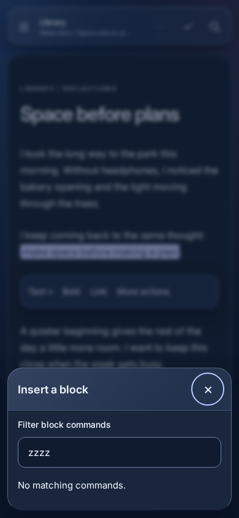
SHA256 0bd1ecad2c37b60f0bde217a937b523ec2a2db99afd8a2db3d25407d2561a8bd

SHA256 8391106f6e05871a44ebfb03ac661336568143b856f3297ddc5eea773360dbaf

SHA256 15d326215d1a24f1a3d5daddf304fcbb92d68416c205a1ab9da7867d7224a45f

SHA256 d47d4004a2bfa7830d553519a4315b214e822883b9a5b123c54e4757fbe63f9d